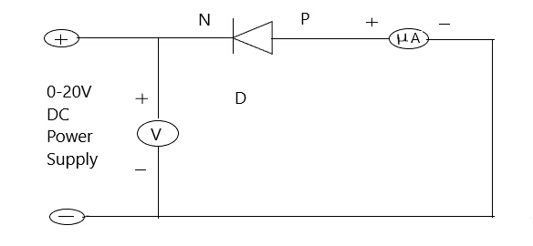

THEORY
We know in the case of insulators, the region between highest level of completely filled band
(called valence band) and the lowest level of allowed empty band (called conduction band) is
very wide This is called energy gap, denoted by E g and is about 3 to 7 eV (electron volt) in
case of insulators In case of semiconductors, this energy gap is quite small. For example, in
case of manium, E g-0,7 eV and in case of silicon E g -1.1 eV. In semiconductors at low
temperatures, there are few charges to move so conductivity is quite low. At higher temperatures
the donor or acceptor levels come in to action and provide carriers and hence the conduction
rises.
In addition to the dependence of the electrical conductivity on the number of free charges, it
also depends on their mobility. However, mobility of the charge carriers somewhat decrease with
increasing temperature but on the average the conductivity of the semiconductors rises with
increasing temperature To determine the energy gap of a semi-conducting material, we study the
ariation of its conductance with temperature. In reverse bias, the currents flowing through the
jusction are quite small and internal heating of the junction does not take place.
Formala
In the reverse bias, the saturated value of the reverse current for a PN junction diode is
given by,
Is=constant.T3/2e-Eg/KT_ _ _ _ _ _ _(1)
Where,
Is=saturation current in micro ampere
T=temperature of junction diode in Kelvin,
Eg=hand gap in eV
K=Boltzmann constant in eV per Kelvin.
For small changes in temperature where log T can be treated as constant, relation (1) can be written
log10I=constant-5.036Eg. 103/ T _ _ _ _ _ _ _ (2)
Graph between 10/1 as abscissa and logol, as ordinate will be a straight line having a
slope=5.036E.g
hence band gap Eg in eV will be,
Eg=slope of the line / 5.036
